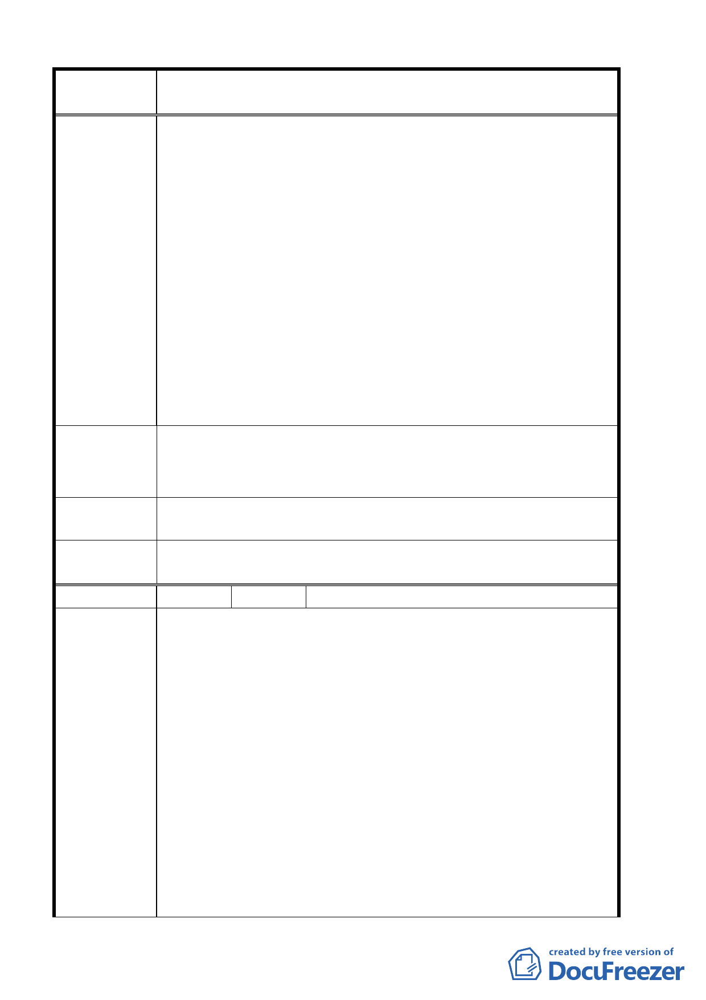

案 名 臺北市北投區都市計畫通盤檢討案（主要計畫）案
住宅區之原則：
（1）高度：海拔高度在五 0 公尺以下。
（2）坡度：地勢平緩，坡度在百分之十五以下。
（3）地質：地質堅固，復不在礦坑附近，惟土壤貧瘠，不
適耕作。
（4）現況：鄰近四周樓房林立，且已由保護區變更為住宅
區，顯係 貴府認為本區已符合變更為住宅區
之原則。
（5）交通：距行義路僅二十公尺，交通方便，行義路以西
之地區，目前僅剩上開僅有之低坡度保護區土
地夾雜於已變更為住宅區土地中間。
（6）禁限建規定：上開土地未位於軍事管制地區或周邊，
並無相關禁限建之規定。
應該將建議位置保護區變更為住宅區；安養中心專用區
建 議 辦 法 （93.12.2 第二次陳情），以期望能地盡其利，並符合當地發展
現況。本公司亦願意配合法令應整體開發之相關規定辦理。
專 案小組 審 93.12.27 專案小組第十次審查會議：所提意見不符本案通盤檢
查 結 論 討原則，建議另案辦理變更。
委員會議
決議
同意依專案小組審查結論辦理。
編 號 ５ 陳情人 賴思忠
民發見於都市計畫書（主要計畫）第玖條「公共設施實施進度
及經費內」，漏列「行義公園」之開闢經費。
經查「行義公園」公共設施保留地於石牌路二段 343 巷 8 弄現
有道路以東部份，於八十二年三月間已被市府徵收完畢。但以
西部份，承蒙公園處答應於八十七年編列補償費，但後以財政
結絀為由，需延後至九十二年始可為之，今該公園南端住宅聚
陳 情 理 由 落之社區已剔除於行義公園外，市府應可以減少約八億元之徵
收補償費支出。剩下之西半部私有土地徵收補償費減為一億六
仟萬元，政府若再不編列，既失信於民，且嚴重損害民眾之權
益。早日闢建行義公園是提昇當地生活環境品質之最佳良方。
1.行義公園西半部存有北投第六公墓，雖已限葬，但既成之墳
墓區，有礙觀瞻，周圍地區再怎麼致力於提昇生活環境，都
敵不過公墓存在陰影的負面影響。對即將開闢之行義國小學
第 8 頁，共 49 頁